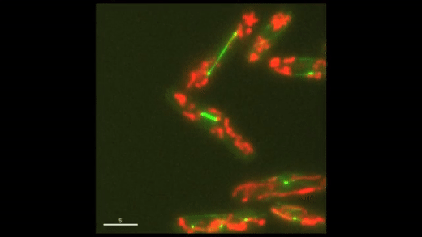
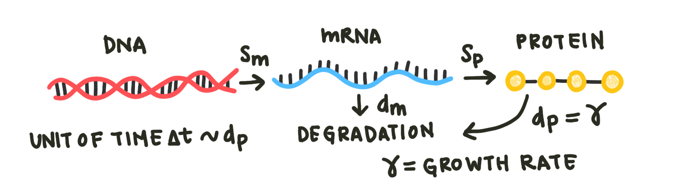
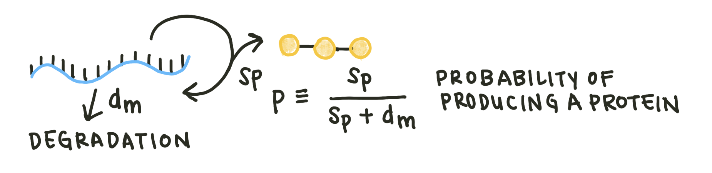
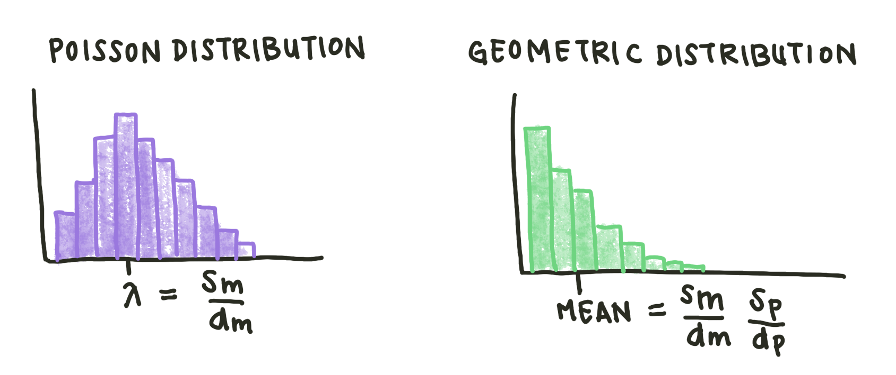
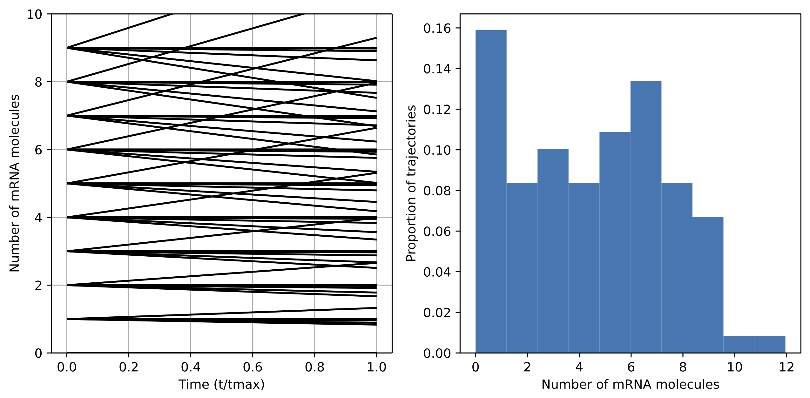
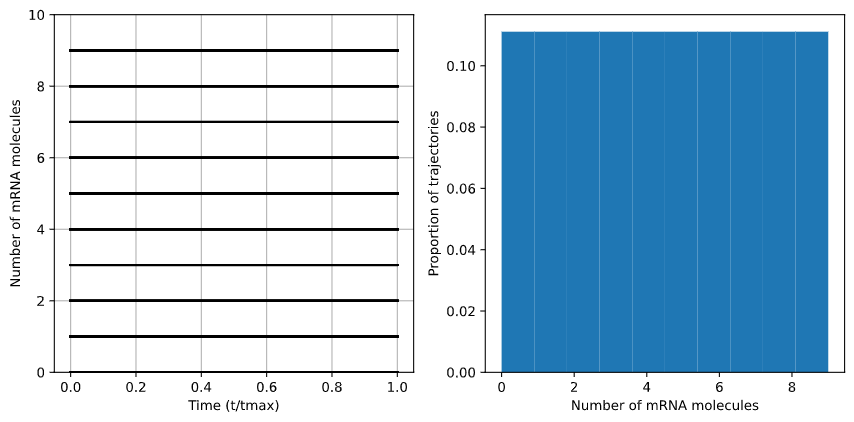
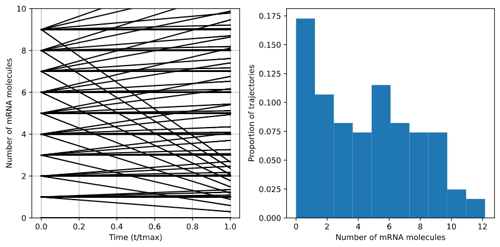

Stochastic Modeling¶
So far, the models we have considered all make one key assumption: the variables under consideration are continuous. Some, like concentrations, are actually continuous, but others, like the number of molecules in a cell, are simply so large as to be continuous in practice. But what if we are looking at the number of a specific protein in a single cell? Most cells contain only a finite (and usually quite small) number of a particular protein. In some cases, we do not need to model individual cells: we may be able to consider a population of cells as a single unit, for instance in the case of a bulk bioreactor. However, for other applications we may want to examine gene expression in individual cells. Single-cell analysis is a growing family of techniques that allows scientists to study heterogeneous populations of cells and understand complex intercellular dynamics.

Fig. 1: Cell cycle dynamics at the single-cell level. E coli cells express green fluorescent microtubules and red fluorescent mitochondria. Note the limited yet variable number of mitochondria in each cell.
To more adequately describe these low-copy number dynamics, we will use stochastic modeling. We’ll use a basic model similar to the one considered in the differential equations section here:

Fig. 2: The basic model incorporating mRNA and protein production and degradation. Note that the degradation of protein is equivalent to the cellular growth rate here, as proteins disperse in the dividing cell.
However, instead of using deterministic equations, we will model the probability of making a protein or mRNA molecule.Since the amount of DNA in the cell remains constant in our model, we can describe the number of mRNA molecules in the cell as a series of independent events. This means that, like many biological phenomena, the number of mRNA in the cell is distributed in a Poisson distribution.
\(p(N) = \frac{\lambda^n}{n!}e^{-\lambda}\)
A Poisson distribution is a distribution that models the number of events occuring within a given time interval (in this case, the length of a single cell cycle). \(\lambda\) is the shape parameter, which indicates the average number of events in the time interval. In this case, \(\lambda\) is defined by the ratio of the rates of mRNA production and degradation, \(\frac{S_m}{d_m}\), since our model treats production of a single mRNA molecule as an event.
The mean number of proteins, on the other hand, is dependent on the number of mRNA molecules. For each time step, the mRNA molecule can either degrade or be translated into a protein. \(S_p\) is the proportion of time-steps that form a protein. The probability of producing a protein in a single time-step, or \(p\), is just \(S_p\) divided by the total probability of producing or degrading a protein: \(S_p + d_m\).

Fig. 3: Examining only the protein production and mRNA degradation steps. In a single time step, mRNA can either be produced (\(S_p\)) or degrade (\(d_m\)).
We now have the probability of producing a protein in one cycle. But we want to know the probability of producing a specific number of proteins. \(1-p\) is the probability of not producing a protein in one time step. So, we can calculate the probability of producing 0, 1, 2, or N proteins as follows:
\(P(0) = 1 - p\) \(P(1) = p(1 - p)\) \(P(2) = p^2(1 - p)\) \(P(N) = p^N(1 - p)\)
This mechanism results in a geometric distribution. A geometric distribution shows the probability of ‘succeeding’, in this case producing a specific number of proteins, in a given number of time cycles. In this kind of distribution, the mean number of proteins is actually not the most likely number in the cell. The mean number of proteins per cell for our model is just the ratio of mRNA production to degradation multiplied by the protein production and degradation rates.

Fig. 4: Sketches of Poisson and geometric distributions. Both these distributions are discrete.
It’s important to note that while the number of protein/mRNA molecules in a cell is random, the distribution of these molecules is not. These distributions change in predictable ways given \(S_m\), \(d_m\), or other parameters. The Master equation describes how these distributions evolve deterministically over time. Each state (number of molecules) is modeled with a separate deterministic equation. Examining the general case of \(n\) mRNA molecules, we have two adjacent states: one where the cell has one fewer molecules, and one where the cell has one more. \(f\) and \(g\) are the production and degradation functions for each transition. For example, \(f_{n-1}\) describes the production of the \(n\)th molecule.
\(m_{n-1} \xrightleftharpoons[g_{n}]{f_{n-1}} m_n \xrightleftharpoons[g_{n+1}]{f_n} m_{n+1}\)
To describe how the probability of having \(n\) molecules changes, we write a differential equation that incorporates all the ways the number of molecules can change.
\( \frac{\delta P(m_n)}{\delta t} = f_{n-1}m_{n-1} + g_{n+1}m_{n+1} - (f_n + g_n) m\)
For the simple model we established, the only components of \(f\) and \(g\) are constant degradation and production. Therefore, \(f_n\) is just \(S_m\) and \(g_m\) is \(d_{m} n\). Remember, the number of mRNA in a cell \(m_n\) is a Poisson distribution:
\(m_n \approx \frac{\lambda^n}{n!}e^{-\lambda} = \frac{S_m}{d_m}\frac{1}{n!}m_o \)
A more complex model includes both mRNA and protein states. If \(m\) is the number of mRNA and \(n\) is the number of proteins, the possible states can be shown as a 2-dimensional matrix. We can make another set of equations for the protein distribution; however, we use a geometric distribution rather than a Poisson distribution.
The Master equation generates an infinite set of differential equations. To solve these equations numerically, we can run simulations with many mRNA and protein initial conditions and plot the trajectories. First, we write functions to describe \(m_n\), \(g\), and \(P(m_n)\). The functions for \(m_n\) and \(g\) take the current number of mRNA molecules in the cell and return the function value:
def get_m(n, mo):
mn = mo*Sm/dm*(1/np.math.factorial(n))
return mn
def get_g(n):
return n*dm
The function to get \(\delta P(m_n)/\delta t\) will eventually be integrated to get the function \(P(m_n)\), just as in the differential equations section. It takes the previous values of \(P\), a time vector, and two parameters: the initial number of mRNA molecules for the simulation \(m_o\) and the current number \(n\).
def get_P(Ps, t, n, mo):
P = Ps
f = Sm
if n == 0:
dPdt = get_g(n+1)*get_m(n+1, mo) - get_m(n, mo)*(get_g(n)+f)
else:
dPdt = f*get_m(n-1, mo) + get_g(n+1)*get_m(n+1, mo) - get_m(n, mo)*(get_g(n)+f)
return [dPdt]
To visualize multiple possible scenarios, we will want to vary the degradation and production parameters. Rather than changing the two parameters individually, we can vary their ratio, in this case \(\frac{S_m}{d_m}\). In addition, we can set the maximum number of mRNA molecules to consider. Since most genes only express a limited number of mRNA molecules, this constraint is biologically accurate and speeds up computation.
Smdm = 0.01
Sm = Smdm*1
dm = 1/Smdm
max_n = 10 #maximum number of mRNA molecules possible
n = np.arange(max_n) #range of starting mRNA values
g = [get_g(i) for i in n] #range of starting g values
times = np.linspace(0., 1., 101)
We now iterate through a number of initial numbers of mRNAs and integrate the get_P() function for each condition. We can then plot the results of these functions to see the trajectories.
Ps = []
for mo in np.arange(0., max_n, 1.): #iterate on mo
for i in n:
m = [get_m(i,mo) for i in n]
ans = odeint(func=get_P, y0=[mo], t=times, args=(i,mo))
Ps.append(ans[:, 0])
fig, (ax1, ax2) = plt.subplots(1, 2, figsize=(9, 4.5), tight_layout=True)
for i in np.arange(0, len(Ps), 1):
ax1.plot(times, Ps[i], color='k')
ax1.set_xlabel('Time (t/tmax)')
ax1.set_ylabel('Number of mRNA molecules')
ax1.set_ylim([0, 10])
ax1.grid()
In addition to plotting the raw trajectories, we will want to plot a histogram of the final trajectory positions, which will give us the distribution of mRNA values.
#Pull final values for histogram construction
hist = [P[-1] for P in Ps]
ax2.hist(hist, bins=max_n, density=True)
ax2.set_xlabel('Number of mRNA molecules')
ax2.set_ylabel('Proportion of trajectories')
We ran the simulation for \(\frac{S_m}{d_m}\) values of 0.75, 1, and 1.25. When the value of \(\frac{S_m}{d_m}\) is below one, production occurs faster than degradation so the overall number of mRNA molecules increases and the distribution shifts upward.

Fig. 5: Case of \(S_m\)/\(d_s\) = 0.75. The distribution of mRNA molecules shifts upward as production rates outstrip degradation.
At $\frac{S_m}{d_m} = 1, degradation and production rates are perfectly balanced, so the distribution of mRNA molecules remains the same - in this case, perfectly uniform.

Fig. 6: Case of \(S_m\)/\(d_s\) = 1. The distribution of mRNA molecules remain stable as the production and degradation rates are identical.
In the case of \(\frac{S_m}{d_m} = 1.25\), degradation is faster than production, so the overal distribution shifts downward.

Fig. 7: Case of \(S_m\)/\(d_s\) = 1.25. The distribution of mRNA molecules decreases as degradation outpaced production.
In this case, the number of possible initial conditions was small and the model complexity low, so the computational time was not an issue. However, as models incorporate more parameters, the naive protocol used above will start to take a long time. We can use methods such as the Gillespie algorithm and the Fokker-Plank approximation to speed computation. More informatiocan be found here